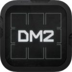

2016 has been another interesting year of iOS music making. As ever, we have had to deal with the annual cycle of both hardware and software updates from Apple. Fortunately, the introduction of iOS10 went pretty smoothly and, while the iPhone had a pretty substantive update, things were a little more muted for the iPad itself. Maybe evolution rather than revolution…. and, for me at least, I’d say that was a good thing.
At a personal level, perhaps the only real disappointment is that we are still really waiting for the Audio Unit plugin format to catch fire. The Ableton Link sync protocol has made some further progress but, while Apple’s re-vamp of AU for iOS in it’s v.3 format has most certainly helped, we are still waiting for lots of well-established developers to commit to AU.
The reasons are probably obvious. First, the time and effort required to implement AU on established products might be difficult to generate a significant financial return on given the way the App Store pricing/update model works and, second, some more complex apps might be difficult to translate into the compact UI that the AU windows within a host app requires. Still, we have seen good progress and there are now lots of very good AU-ready music apps out there. Hopefully, 2017 will bring a whole lot more…..
We have seen some of our favourite iOS music apps updated and I have some personal highlights amongst this lot that I’ll perhaps share in another post… but we have also had the introduction of a brand new crop of brilliant iOS music apps. So, if Christmas delivered your first iOS device, and you are looking to populate it with some of the best apps of 2016, which apps should you choose? What are the top new iOS music apps of the year?
I’ll add the same qualifier here as I’ve done in previous years; any ‘top apps’ list is bound to be a totally subjective selection but, if you want the Music App Blog take on the top ten app highlights of the last 12 months, then here goes…..
….. and I’ll begin with my choice for ‘iOS music app of the year’ but, as for the rest of the list, then they will come in no particular order….. Enjoy…. And then feel free to disagree with me to your heart’s content :-) Oh, and a few of these apps are still on ‘holiday season’ special pricing. If you are reading this post within a day or three of it being first published then, if you are quick, you might pick up a bargain or two…..
AUM
In 2014, I picked Korg’s Gadget as my personal ‘app of the year’, while in 2015, I put Patterning from Olympia Noise Co at the top of my own particular pile. These are both apps that are still personal favourites and that get regular use on on own iPad Pro-based system. For me at least, there is one app released in 2016 that stands clear from the rest and, interestingly, it is not an app that, on its own at least, even makes any noise; AUM from Kymatica.
For the less experienced iOS-wielding musician, AUM is maybe a little hard to describe but it is perhaps best summarised as a software-based audio mixer but, over and above the sorts of channels and busses that you find on a conventional audio mixer (hardware or software), with a feature set that means it can also serve as a ‘connection hub’ for all your IAA or AU iOS music apps, allowing you to route audio between them, as well as allowing MIDI data to be routed in/out of your various apps.
In one sense, AUM’s functionality overlaps with that of Audiobus but, compared to the current version of Audiobus, it does a lots more besides including support for audio busses, MIDI data handling and, of course, hosting AU apps. In another sense, AUM’s functionality overlaps with a DAW/sequencer such as Cubasis or Auria Pro but without the multitrack recording environment and with a somewhat more ‘abstract’ UI (that doesn’t mimic the look of the hardware world)… and if you are more focussed on mixing apps in a live performance context rather than a recording context that might well be an advantage.
Either way that you look at it, however, as a tool for bringing the audio (and MIDI) data from your various apps together, AUM is an incredibly powerful tool. Audiobus, which has long been a friend to the vast majority of iOS musicians (and to which we all owe a debt of gratitude), may still be a weapon of choice for many but, in its current incarnation at least, it is somewhat dwarfed by the options provided by AUM.
When I reviewed AUM back in February, I did wonder whether the (slow) coming of AU might mean that everyone would then simply switch over to a DAW/sequencer host for all their ‘app connectivity’ requirements. I still think that’s a possibility but given that not everyone who links apps together is doing it for recording purposes, then there is likely to remain a market for something that focuses on audio mixing/routing…. Providing, of course, that the app concerned does it in a flexible and powerful fashion. Thankfully, that’s just what AUM does….
If your iOS music making involves linking multiple IAA or AU apps together, AUM is the best environment iOS currently offers for doing that without resorting to using a DAW environment such as Cubasis or Auria Pro. It is also rather elegant to look at (I like the abstract, modern, design) and – in my experience anyway – very stable. Audiobus was, when it first appeared, a revolution for iOS musicians. I’m not sure AUM has had such a seismic impact…. But it has certainly taken the ‘solution’ for inter-app connectivity to a new level. Top notch stuff.
AUM – review – UK£13.99/US$18.99
Blocs Wave
As well as being a bit of an iOS addict, around five years ago, I also made the switch from Windows to OSX. I’m not one to dwell of the pros and cons of the two different desktop computing environments and I’ve been more than happy with my personal choice but, if I have had one regret since making the transition, it’s that I’ve lost access to one of my favourite pieces of music software; Sony’s Acid Pro. OK, I know I could run an instance of Windows on my OSX machine…. but I prefer to keeps things clean and simple.
I’ve no idea if Sony will ever port Acid over to OSX (unfortunately, while Sound Forge has made the transition, there is no obvious sign of activity on the Acid front) but, in the meantime, iOS has sort of come to my rescue; we now have Blocs Wave from Novation.
Now, Blocs Wave is perhaps not quite the beast that Acid Pro is but, as a tool for experimenting with audio loops as a means of music creation, it really is a very creative environment. When I first reviewed it in March, it was perhaps a ‘shows considerable promise’ sort of an app…. but, several and many significant updates down the line, Novation have turned this into a very cool app with an impressive feature set. And, in making it possible to share the IAP audio loops sets between their Launchpad app and Blocs Wave, they have also made it easier for users to capitalise on their sample investments.
With support for Ableton Link, a range of import/export features, a very neat ‘record your own’ audio loop environment, real-time tempo/pitch matching, a very creative ‘slice’ mode, song construction using the ‘sections’ feature and basic mixing features, this is – in purpose if not in workflow – very much an ‘Acid-mini’ for iOS. Oh, and right now, it’s also ‘ON SALE’ as part of the holiday season bargain hunting. If loop-based music making is (part of) your thing, then Blocs Wave is well worth a look.
Blocs Wave – review – UK2.29/US$2.99
Model 15
If any sub-category amongst the App Store’s music app collection is undeniably stuffed with an abundance of great apps then it is amongst the synths; we have some absolute gems and, during 2016, we have seen some truly impressive additions to an already impressive list. So, I make no apology for including a number of synths in this years ‘top 10’…. And the first of these to get a mention is Moog’s mega-synth Model 15.
Now I’m happy (if embarrassed) to admit that I’m no expert when it comes to modular synths and, in Model 15, Moog have recreated (with a few modern twists) their classic 1970s hardware Model 15 in an iPad app. This was (and still is for those lucky enough to own one) a bit of a monster…. and while you get the convenience of that same synth functionality in a compact software format with the app (oh, and a somewhat cheaper price!), even the app can look a bit daunting to start with.

Moog’s Model 15 – classic modular analog synth recreated in an iOS music app.
However, whether you are a programmer or not, don’t let that stop you giving Model 15 a try. It may look a little complex with all those virtual cables and connections you can make, but it also looks absolutely beautiful… and sounds even better. It’s also supplied with an excellent collection of presets so, if you don’t have to chops to roll your own, then just load up a preset or three and enjoy the sound; it’s big, warm, and wonderful.
OK, so this might not be the synth I would suggest to an iOS synth newbie looking for their first ‘serious’ iOS synth app and, in music app terms, it’s not exactly cheap (although Google the price of a secondhand hardware model to put the app price in perspective), but it really is an absolute gem sonically… and worth every penny/cent of the asking price.
Model 15 – review – UK£22.99/US$29.99
DM2
My next choice is also a synth but, this time, it’s a drum synth; DM2. As I mentioned when reviewing the app back in May, the general workflow of DM2 will be familiar to those who have used DM1. The latter is a very popular sample-based drum machine app and, while the apps most certainly share a heritage – Pascal Douillard worked within Fingerlab on DM1 before starting his own development team in Audionamy in order to create DM2 – DM2 itself is actually a synth-based drum machine.
That sorts of puts it in the same general area as apps such as Elastic Drums and SeekBeats (amongst others), both of which are also very good if also very different in looks and workflow. What I particularly like about DM2 is some of the design decisions made by Pascal from the outset. DM2 manages to strike a balance between being powerful, sounding great but also being beautiful to look at and not too complex to use in a compact format such as an iPad. This is quite a trick to pull off but it has been done with some style in this case.
Many of the features, such as pattern programming and song construction, are presented in a stylish, but very familiar (conventional) fashion. It feels familiar even to a relatively new user. In terms of the synth elements that are used to create your various drum sounds, the user is given enough options to get creative – and to give a wide range of very meaty tones – but without things getting too complex. Even if you have never used a drum synth before, there is not too much to be apprehensive about here.
And, to repeat, it does sound great, with a very cool collection of preset sounds to explore. Oh, and the price…. this is just a brilliant combination of design, features, sound and value for money.
DM2 – review – UK£3.99/US$4.99
 iWaveStation
iWaveStation
We do have ‘original’, iOS-only, synth app designs but, in 2016 at least, we just happen to have a bit of a run on ‘hardware emulated in software’ synths. Having already included Model 15 above, now it’s time for a Korg example and, in this case it is the wonderful if, at times, also just a bit bonkers, iWaveStation.
The original WaveStation hardware synth was released in the early 1990s and, to an extent, the software version, which I reviewed at the start of December, is both a brilliant homage/emulation of that but also somewhat ‘stuck’ with that early 90s sonic fingerprint. Don’t get me wrong – iWaveStation sounds great and provides those brave enough to get into building their own sounds from the waveform building blocks it is built from with a huge range of sonic possibilities – but it also contains the huge collection of presets, many of which will be familiar from countless hit records from the 1990s onwards.
The whole ‘waveform chain’ approach was a very novel one back in 1990 and grew from Roland’s ‘sample and synthesis’ approach. The WaveStation expanded on the ways in which samples could be used as the sound source within a synth engine and the app reproduces that pretty faithfully while adding a UI that makes the app light years ahead of the original hardware in terms of ease of programming. Oh, and the ‘vector synthesis’ from the original hardware – that allows you to blend between different elements of the sound engine in real-time – is also included here. For those keen to create evolving pad sounds, iWaveStation is a bit of a sample-based dream.
Is it capable of more ‘cutting edge’ sounds? Well, maybe there are more obvious choices if that’s what you are after but there is plenty of sonic possibilities to explore and, if you get into the programming options, there is no reason you couldn’t make some very modern EDM sounds with iWaveStation….
Oh, and if you happen to be a user of my ‘app of the year 2014’ – Korg’s Gadget – then iWaveStation will also appear as a gadget called Milpitas within Gadget…. And rather nicely implemented too it has to be said. Korg have, over the last three years, become one of the leading iOS music app developers and pretty much all the releases in that time have been absolutely first class; iWaveStation slots right in beside that high profile catalogue of apps.
iWaveStation – review – UK£14.99/US$19.99
ARP ODYSSEi
While we are at it, let’s deal with another of Korg’s stellar offerings this year; ARP ODYSSEi. Yes, this is yet another software emulation of classic hardware and, in this case, it is Arp’s Odyssey synth from the 1970s and that Korg re-released in a hardware format just a couple of years ago. Needless to say, the app is a faithful reproduction of the Odyssey format with looks and controls that mimic the original hardware (which is both good and bad as some of the original controls were a little on the small side and, in software, that’s not always helpful), a real sense of the sound of the hardware but a few ‘modern’ twists thrown in for good measure.
In one sense, the ARP ODYSSEi is actually a very straightforward programming task as the original hardware was very much a case of a separate control for every parameter (which is why it was covered in tiny sliders) and, while that makes for a rather busy looking UI (especially on iOS devices with smaller screen formats), it does avoid lots of menu navigation or multi-tabbed screens to move between. In fact, on the iPad, the key controls are split between a couple of main screens plus some ‘extras’ to be found elsewhere.
Korg’s ARP ODYSSEi – a classic analog synth in an app… with a few modern twists added for good measure :-)
However, the area where the original hardware really scored was the sound and, while I can’t promise you the exact sound of the classic hardware, my understanding from those that have used both is that the app gets pretty close and certainly closer than its modest price suggests it has any right to do.
For me, with my not-so-great keyboard skills, arpeggiators are something I’ve learned to love and the ARP ODYSSEi has a rather good one of those. It’s more than just a up/down over a couple of octaves – and even offers options for modulation of multiple parameters within the arp pattern – but the control set also makes all this functionality easy to get to grips with.
Add in some great presets (for those that don’t want to DIY sounds from scratch) and this really is a very impressive package…. And it also comes with support for a gadget – this time called Lexington – within Gadget. Another winner from Korg.
 ARP ODYSSEi – review – UK£14.99/US$19.99
ARP ODYSSEi – review – UK£14.99/US$19.99
 Drum Session
Drum Session
As I’ll get to below, this isn’t the only ‘virtual drummer’ style app to get released this year but Drum Session from Derek Buddemeyer and the Blue Mangoo (iFretless) development team certainly attracted some considerable attention on launch. Derek has, I think, been pretty clear that Toontrack’s EZ Drummer desktop software was an inspiration here and, while the workflow is different, and Drum Session doesn’t (yet) have all the elements of EZ Drummer (or its big brother Superior Drummer), some of the key building blocks are most certainly in place.
When I reviewed the app at the start of December, I commented that there are perhaps two types of users for something like EZ Drummer; drummers themselves who simply want the best drum sounds they can achieve (and who will play in their own parts and trigger those sounds via MIDI) and non-drumming ‘others’ (guitar players, song writers, etc.) who just want access to some great sounding acoustic drums and a comprehensive collection of preset drum patterns/grooves that they can quickly ice together to create a complete drum track in as short a time as possible.
EZ Drummer (and other similar desktop packages) can meat the needs of both these user groups. However, at present, I think Drum Session is much more aimed at the second of these groups. You get a series of very respectable acoustic drum kits to choose between but the highlights of the package are the comprehensive collection of preset (MIDI-based) drum patterns organised into different musical styles and the song construction features that let you string these patterns together. You can also export the MIDI to your DAW/sequencer if you want to edit patterns in. Familiar environment, although the app does offer a solid MIDI editing environment also.
Drum Session – a virtual drummer app for iOS with inspiration from some of the top-flight desktop drum software.
What you don’t get is the option to tweak the sound of the preset kits, to replace specific drums within a kit or to re-mix the kit. Equally, while the app most certainly does use multiple sample layers for each drum – so you get realistic changes in timbre as you play the kit ‘harder’ (higher MIDI velocities) – the number of velocity layers is not yet at the same level found in the desktop; what’s here is good – and good enough for many applications that your average iOS musician will have – but not a match for ‘the best’ that the desktop currently offers. For that first group of users, therefore, Drum Session is not yet an EZ Drummer replacement for iOS.
It is, however, a very impressive debut for the app and Derek has already indicated a development pathway that suggests a clear vision for where the app can go. It’s already an app to make one group of users very happy – basic song-based drum part construction is very easy – and, with the right support, it is easy to think Drum Session could become a contender for that other (drum fussy) group.
Drum Session – review – UK£18.99/US$24.99
Phonem
I think it is fair to say that Wolfgang Palm does things that are somewhat unconventional and, in Phonem – which I reviewed back in August – and which is a port from a desktop version of the same software, that’s exactly what we have got. OK, so this is not a music app that is going to be on everyone’s ‘most wanted’ list; it is, after all, a vocal synthesizer. However, for those geeky about interesting synthesis engines or who do like to use synthetic vocals in the electronic music productions, Phenom is bound to be of interest. It is also a pretty deep app and, therefore, perhaps not one for the more nervous sound designer.
The key element of the sound engine is a large set of phonemes (the sound building blocks from which spoken and sung words are formed) and a system that assists the user in stringing these together – and tweaking their sound and pitch – so that vocalised phrases (both spoken and sung) can be constructed. The phoneme database is dominated by sounds from the English language but there are also a small number of German and French ones included also…. if you want your voice synth to be multi-lingual, then Phonem is happy to tick that box :-)
Phonem is also actually a rather interesting synthesizer… and by that, I mean the synth engine, based as it is on phonetic sounds, is capable of some very cool non-vocal (or vocal-tinged) sounds. While I’d expected the app to be predominately about creating vocal sounds, in fact, I spent just as much time with it creating pads or leads or special effects.
The UI is also rather easy on the eye and, while there are plenty of controls and options to get your head around, the layout is generally clear and stylish. The other impressive technical detail is that, as well as MIDI, Audiobus and IAA support, the app also offers AU support. This is very welcome and I think the approach adopted here by Wolfgang – where the AU UI is simplified for playing rather than programming (you program sounds in the ‘full’ version of the app) – could easily be a model that other developers could adopt.
Is Phonem a vocalist in an app? Well, yes… and then no. I could certainly imagine using the app to craft a short vocal hook for an EDM or experimental electronic track. However, I think it would be a pretty brave soul who took on the challenge of attempting to create a full vocal performance for a song – with a verse/chorus structure – especially if they wanted that vocal performance to sound close to realistic. In fairness to Wolfgang, I’m pretty sure that’s not how he envisaged Phenom being used by the majority of owners….
That said, Phonem is one of those rare things in music software… it is both fun to use (if somewhat beguiling) and (in the right musical context) very creative. Yes, it is very much a niche product but, at the UK£14.99/US$19.99 asking price, not so expensive that interested iOS musicians couldn’t feel able to take a bit of a punt. Quirky, beautifully designed and brilliant.
Phonem – review – UK£14.99/US$19.99
Poison-202
There are more complex and more powerful ‘conventional’ software synths that you can buy for your iOS device but, when it comes to hitting sweet spot in terms of features, sound, price and technical specification, I think Poison-202 from JimAudio has a heck of a lot of boxes ticked.
At one level, this is just another vintage-inspired soft synth but the UI – while fairly busy – has a modern feel and is great to work with. The synth engine is not so brain-bursting that a novice synth programmer couldn’t give it a spin, yet there are enough sound options to really go to town if you want to. There are 2 main oscillators (each with a choice from 5 waveforms including a ‘Super Saw’ form that offers seven saw oscillators together and that can be detuned), a simple ‘sub’ oscillator and a noise generator two filters and two amplitude envelopes, pitch envelopes and options for ring and sync modulations. You also get two LFOs that can be cross-modulated if required. And while the modulation options are perhaps not as flexible as on some high-end iOS synths, the LFOs can be directed at the pitch, filter, amplifier or pulse width modulation elements of the engine to create plenty of ‘motion’ within your sounds.
A simple 3-band EQ is included alongside a choice of digital effects that include distortion, bit-crushing, flanger, delay, panning delay and reverb. A limiter can be toggled on/off across the main output. A basic arpeggiator is also included you also get virtual pitch wheel and mod wheel options alongside the virtual piano keyboard, while the latter can also be set to operate in ‘scale’ mode. This is a serious synth in a compact package.
And Poison-202 also sounds great. Whether you want big leads (e.g. Acid Lead), booming or aggressive basses (e.g. Insane Bass), delicate bells (e.g. Bells), cheesy organs (e.g. Organ 2), mellow electric pianos (e.g. E.Piano 2) or monster raving synths (e.g. Rave Hoover) or… well, you get the idea…. Poison-202 seems to do it with ease. And, with the output fed through some decent monitors or a keyboard amp, the sound is big; this is an app that, should you choose, you could easily crank up in a live performance context.
Soon after I reviewed the app in September, a further update added AU support. This just made something good even better and, while we do have a few synths that have now made the transition over to AU, Poison-202 is most certainly one of the better ones. Being able to run multiple instances of the app within a project make it ideal for those working on electronic-based music styles and the UI works very well within the AU format. Poison-202 may be a small package but it comes with a great spec, great design and a big sound…..
Poison-202 – review – UK£7.99/US$9.99
 iSpark
iSpark
By the time we get to the last entry in my personal ‘top 10’, I think it is fair to say that 2016 has been a year of synth and drum app…. and my final selection – Arturia’s iSpark drum machine. This software version is actually based upon Arturia’s own hardware drum machine called Spark that has a great spec and a fairly hefty price tag.
However, Spark is very much a modern bit of music technology and, while we have all sorts of flavours of drum machine on the App Store, rather like Diode-108, iSpark takes all the elements of a ‘classic’ hardware drum machine but doesn’t slavishly replicate that UI/workflow experience in software. Instead, what we get with iSpark – just as in its hardware form – is a very ‘modern’ take on the drum machine concept.
The UI is beautifully put together; clean, clear, simple and very easy on the eye. You get a sample-based, drum machine recreated in software where you can build a drum kit containing 16 sounds (there are 640 instruments/40 kits included, more available via IAP and you can also import your own samples) and, while these might be predominantly drum sounds, there are also a smattering of synth and FX sounds included. And given the pattern/sequencing tools offered, you could use iSpark to provide (for example) bass lines to your patterns alongside your drums.
The included kits cover classic drum machines, a range of contemporary electronic drum sounds and some acoustic drum samples. Through a decent monitoring system, iSpark undoubtedly delivers quite a sonic punch. You get a powerful set of pattern creation options, parameter automation within patterns, basic mixing, some very good effects (with real-time control) that can be applied both to individual drum sounds and at a ‘master’ level, a very impressive song construction section where patterns can be placed into ‘chains’ (think of a chain as a song section) and then chains triggered in sequence to build a full song-based arrangement.
The other impressive technical feature is that, while iSpark is sample-based, for each of your 16 instruments within a full kit, you can specify up to 6 sample layers. These six layers can be used in various ways but the obvious option is to use them as velocity-based layers so that you can trigger a different layer for a specific velocity range. This would be great for constructing more ‘real’ sounding kits – acoustic or electronic – where, with appropriate samples, you can make the timbre of the sound change as you strike the drum harder (that is, you trigger a higher MIDI velocity) as well as the sound getting louder. In truth, Arturia really could have rung more out of this multi-sample layer format with the included sounds…. but don’t let that stop you doing just that.
Anyway, looks great, sound great, offers a smooth workflow and yet is very flexible with a perfect balance between features and easy of use. iSpark might not be a ‘classic’ drum machine, but it is a classic bit of brilliant design and could easily be your go-to sample-based drum machine. Oh, and it is, of course, also available at an App Store price point. Top-notch stuff from Arturia.
iSpark – review – UK£7.49/US$9.99
Honourable mentions
2016 has, of course, bought us more than ten stellar new apps and, while the list above represents my personal top ten, it would be a shame not to also add a few ‘honourable mentions’. For example, how about the work done by Klevgränd Produktion this year? They have released a number of new iOS music apps, all of which feature innovative designs, a focused feature set and great sounds… but also bring AU to the fore. Hat’s off to them for making a full commitment to this plugin format.
And while it is also drum related (and I’ve already picked a number of drum apps), I’m also a big fan of what Luis Martinez does with his drum apps. This year, my personal highlight was Soft Drummer which, despite its ‘soft’ description, is a brilliant source of easy-to-create acoustic drum parts in a variety of musical styles (and not just jazz).
Another highlight for me is actually two apps not one; RP-1 and RF-1 from Kai Aras. These are modest little apps that provide fairly conventional delay and reverb effects processors respectively. However, that are very well presented, give the user just the right balance of control vs ease of use and deliver very good sound. These are two apps that are more than up to their specified task… but the icing on the cake is AU support and the option for using multiple instances of the apps that AU brings. The UIs when used within a suitable host are also spot on. If Kai was to expand on this range of conventional processors with EQ and compression (for example), I’m sure they would sell well.
Another modest(ish) app that I’d also highlight because of its AU support is Phasemaker. No, it’s not the most powerful synth you might ever use but, yet again, the design manages to strike a balance between features, sound and easy of use that just seems to be a perfect fit for AU under iOS. Developer Bram Bos has also bought us two different AU-friendly drum machine apps but, for me at least, Phasemaker is the highlight of his current catalogue and well worth a loop if you think AU is the way forward.
Phasemaker’s AU support means multiple instances can be run in a suitable host – as seen here with AUM.
My final honourable mention is for DrumPerfect Pro. I reviewed this back in January and, while this is, in essence, an ‘upgrade’ on the original DrumPerfect, this was released as a new app for all sorts of reasons that I can (from a business perspective; making money from app development must be a real challenge) understand, so I’m going to treat it as such here. Like Drum Session, DrumPerfect Pro is a ‘virtual drummer’ and, technically, it is a brilliant piece of software; not perfect in every way (the UI is not the prettiest thing you will every see) but the engine design is very clever and the results can sound very ‘human’. However, since release in January, DrumPerfect Pro has not had a single update. I’ve not been in touch with developer Marinus Molengraft in recent months to enquire what might be happening with the app but I sincerely hope that this is not a project that he has (for whatever reasons) had to abandon. Fingers crossed…..
Missing in action?
As mentioned earlier, this is obviously a personal selection of app – no more, no less – and while my work on the blog does allow me to see perhaps more apps than many other iOS music makers, that doesn’t mean my choices are any ‘better’ than those you might make. So please feel free to share below if you think I’ve missed something that, for you, is a highlight of 2016. I’m happy to have my attention pointed to apps I might have missed or gems that I’ve yet to fully appreciate…
And, with 2016 coming to an end, we can also turn our attention to what 2017 might bring. At some point in the next few days, I’ll go and polish my Crystal Ball app and, if I see anything interesting, perhaps I’ll share that as a further discussion post…. Until then, hats off to the developers of the apps mentioned above….. Here’s hoping there is more to come in 2017…..


{kind=link}
{kind=link}
{kind=link}
{kind=link}
{kind=link}
{kind=link}
{kind=link}
{kind=link}
{kind=link}
{kind=link}
{kind=link}
{kind=link}
{kind=link}
{kind=link}
{kind=link}
{kind=link}
{kind=link}
{kind=link}
{kind=link}
{kind=link}
Blocs Wave and AUM have been a revolution for me in my IOS music making efforts. The kind of apps that help free a sonic imagination. Brilliant. Add to that the rise of AU apps and effects, plus Fab Filters being on sale at a price I can live with, and 2016 has bee great for music apps.
I can assure you that DrumPerfect Pro has not been abandoned and has more in store. Beyond that I’m not at liberty to say.
:-) That’s excellent news Zen….. The engine has always been a very imaginative solution to the whole multi-layer sample issue under SOS and the randomisation options are brilliantly executed…. Here’s looking forward to what might come next….. very best wishes, John
Bang on article, John!
John, great article. A lot of users enjoy music and there are many music apps int the market and everyone is interested in the best apps. Blocs Wave is a very good music app for the IOS users. Thanks for updating us with the new apps.
It’s hard to argue with John’s list, although I only have 4 of the listed apps. My app purchasing is down this year (way down from all previous years), but I’m very happy and productive with what I have. For me, Model 15 was the top new app of 2016.
As mentioned, a top list of best app updates of 2016 could be fun topic; my favorite is Cubasis2.
Hi Toz…. I’m a little biased because I’m a long-term Steinberg user but Cubasis 2 would be my choice also :-) Best wishes, John
To me ispark seems to have the same limitation as imaschine 2 in that you can not export individual track and midi information unlike Beathawk , Drumperfect Pro, DM1.
I think apeSoft and the Amazing Noizes developers need a special mention: they’ve updated their apps, added Link and AU to many of them, and significantly upgraded/updated the features/functions in many of them too as well as maintaining a degree of GUI familiarity across the apps. I hope Moebius Lab eventually gets an update so it supports AU apps too. If you like creating music outside of the box, then these developers and their apps are definitely worth looking into.
Excellent list, John, but you might want to correct a couple of typos where Phonem is referred to as “Phenom”.
All the best for 2017, and keep up the good work.
Ah! My keyboard dyslexia got the better of me…. Now corrected (I think?!?) :-) Very best wishes, John